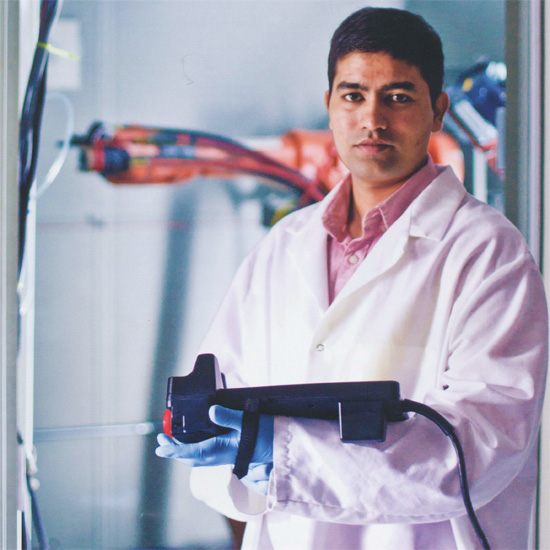

Dr. M.J. Soileau
COOKIN' WITH M.J.
Celebrating a Record Year

In 2010, the Office of Research and commercialization at
UCF celebrated a major accomplishment - UCF researchers accrued
$1.05 billion in research-related funding since 2000.
In those 11 years, our researchers increased funding, were
ranked four times on national top 10 lists for the strength of
our patents, and built-with the help of our community partners-a
nationally recognized entrepreneurship ecosystem that has resulted
in more than 1,600 jobs and a $200 million annual economic impact.
UCF has also celebrated 11 classes of millionaires, researchers who
have attracted $1 million or more in funding in a fiscal year.
UCF's millionaires have collectively received $507 million in
funding since 2000.
We achieved these milestones by aligning our key areas of research
with our region's and our state's economy. Over the years, we have
developed some of the nation's strongest concentrations in lasers and
options, simulation and training, computer science, alternative energy,
biomedical science, nanoscience and materials, among other areas.
A significant part of the growth is due to efforts to commercialize
the research conducted at UCF. Our associate vice president for research
and founder of the UCF Business Incubation Program, Dr. Tom O'Neal, is
largely responsible for these efforts that lead to the formation of Central
Florida companies and jobs, as well as national recognition for the strength
of our research.
UCF generated a 268 percent increase in annual funding since 2000 and a
record $133.3 million in funding in 2010 from outside sponsors. Last year
also produced the largest-ever class of millionaires, 41 researchers, and
a record $75.8 million in federal funding.
The Florida Solar Energy Center received the highest funding of all UCF units
with $21.2 million, largely as a result of a $10 million program geared toward
equipping schools with energy-efficient roofs and the administration of a separate
training program for using solar energy in southern states. The College of
Engineering and Computer Science received the second-highest funding amount at
UCF with $16.7 million and the Institute for Simulation and Training followed
with $15.3 million.
In 2005, when UCF first crossed the $100 million mark for research funding, we
started what has become a tradition - rewarding our winning research team with bottles
of "MJ's Special Blend" hot sauce. IT's a tradition that appeals to my Cajun upbringing
but also speaks to UCF's red hot research potential. If you haven't tasted it, stop
by my office and grab a bottle. And for the decade ahead: Laissez les bon temps roulez!